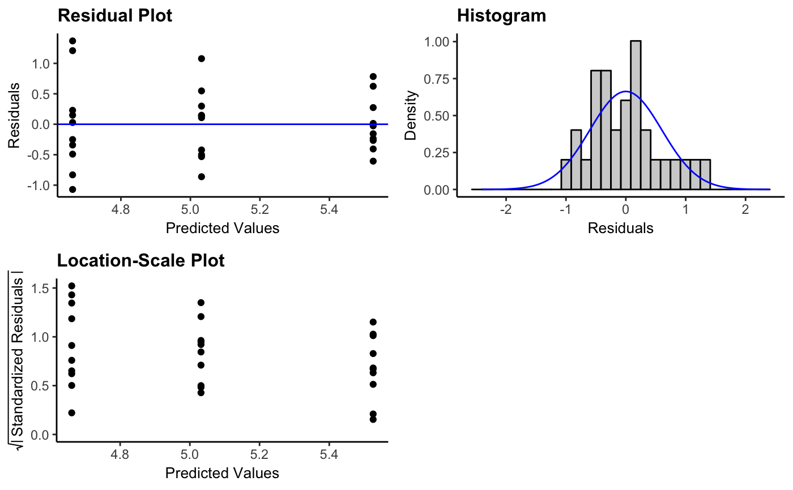

resid_interact.RdCreates a panel of interactive residual diagnostic plots given a model. Currently accepts models of type "lm", "glm", "lmerMod", "lmerModLmerTest", "lme", and "glmerMod".
resid_interact(model, plots = "default", type = NA, bins = 30, smoother = FALSE, qqline = TRUE, scale = 0.9, theme = "bw", axis.text.size = 10, title.text.size = 12, title.opt = TRUE, nrow = NULL)
| model | Model fit using either |
|---|---|
| plots | Plots chosen to include in the panel of plots. The default panel
includes a residual plot, a normal quantile plot, an index plot,
and a histogram of the residuals. (See details in the help file
for |
| type | Type of residuals to use in the plot. If not specified, the
default residual type for each model type is used. (See details in the help file
for |
| bins | Number of bins to use when creating a histogram of the residuals. Default is set to 30. |
| smoother | Indicates whether or not to include a smoother on the residual plot and/or index plot. Specify TRUE or FALSE. Default is set to FALSE. |
| qqline | Indicates whether to include a 1-1 line on the qq-plot. Specify
TRUE or FALSE. Default is set to TRUE. (The option of |
| scale | Scales the size of the graphs in the panel. Takes values in (0,1]. |
| theme | ggplot2 theme to be used. Current options are |
| axis.text.size | Specifies the size of the text for the axis labels of all plots in the panel. |
| title.text.size | Specifies the size of the text for the titles of all plots in the panel. |
| title.opt | Indicates whether or not to include a title on the plots in the panel. Specify TRUE or FALSE. Default is set to TRUE. |
| nrow | Sets the number of rows in the panel. |
A panel of interactive residual diagnostic plots containing plots specified.
Details on the creation of the plots can be found in the details section of
the help file for resid_panel.
## -------------------------------------------------------------------------------- ## Linear Regression Models ## -------------------------------------------------------------------------------- # Fit a linear regression model to predict the volume of a tree based on the # girth of a tree using the R "trees" data lm_model1 <- lm(Volume ~ Girth, data = trees) # Create the default interactive panel of diagnostic plots resid_interact(lm_model1) # Fit a linear model to compare the weights of plants bewteen different # treatment groups using the R "PlantGrowth" data lm_model2 <- lm(weight ~ group, data = PlantGrowth) # Create an interactive panel of the residual plot, the histogram, and the # location-scale plot for "lm" models using the classic theme resid_panel(lm_model2, plots = c("resid", "hist", "ls"), theme = "classic")## -------------------------------------------------------------------------------- ## Generalized Linear Regression Models ## -------------------------------------------------------------------------------- # Fit a generalized linear regression model using a Poisson family to compare # the insect counts between different sprays from the R "InsectSprays" data glm_model <- glm(count ~ spray, family = "poisson", data = InsectSprays) # Plot the residuals using the default panel without titles with a gray theme # and add a smoother to the residual plot resid_interact(glm_model, bins = 30, title.opt = FALSE, theme = "gray", smoother = TRUE)#> Warning: the condition has length > 1 and only the first element will be used## -------------------------------------------------------------------------------- ## Linear Mixed Effects Models ## -------------------------------------------------------------------------------- # Load the lme4 package library(lme4)#># Fit a linear mixed effect model to compare weights of chicks between diets using # the R "ChickWeight" data and including chick as a random effect to account for the # multiple measurements over time lmer_model <- lmer(weight ~ Time + Diet + Time*Diet + (1|Chick), data = ChickWeight) # Create a panel of the residual plot resid_interact(lmer_model, plots = c("resid", "qq")) ## -------------------------------------------------------------------------------- ## Generalized Linear Mixed Effects Models ## -------------------------------------------------------------------------------- # Generate Poisson data example_data <- data.frame(y = rpois(54, 3), trt = rep(c("A", "B"), each = 27), subject = rep(1:18, each = 3)) # Fit a generalized linear mixed effects model with a Poisson family to compare # the response between the treatments with a random effect for subject to # account for the dependence within a subject glmer_model <- glmer(y ~ trt + (1|subject), family = "poisson", data = example_data) # Create an interactive residual plot with the Pearson residuals resid_interact(glmer_model, plot = "resid", type = "pearson")